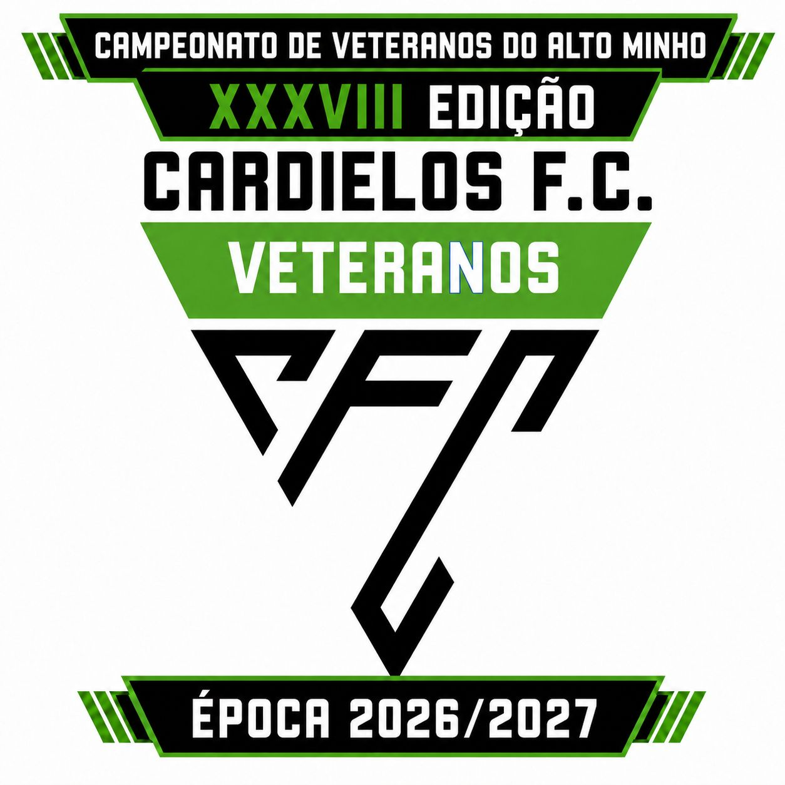

XXXVIII Edição · Época 2026/2027
Campeonato de Veteranos do Alto Minho
Organização: Cardielos F.C. Veteranos. Calendário, resultados, classificação e informação oficial da competição.
XXXVIIIEdição
2026/2027Época
CardielosOrganização

Próxima jornada
Jogos agendados para a competição.
Últimos resultados
Resultados e jogos em destaque.
Top 5
Classificação resumida.